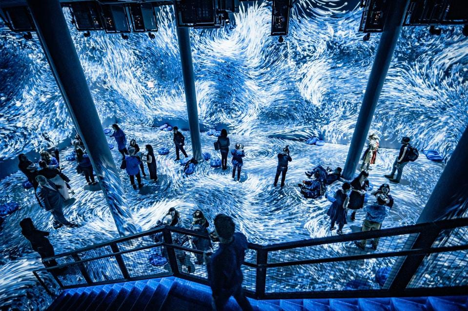
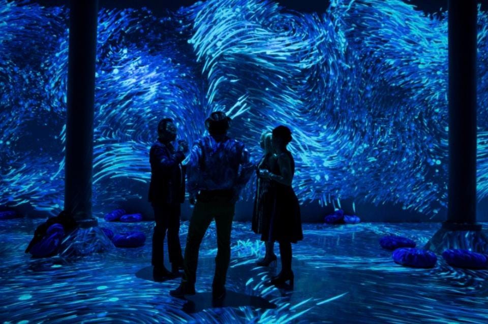
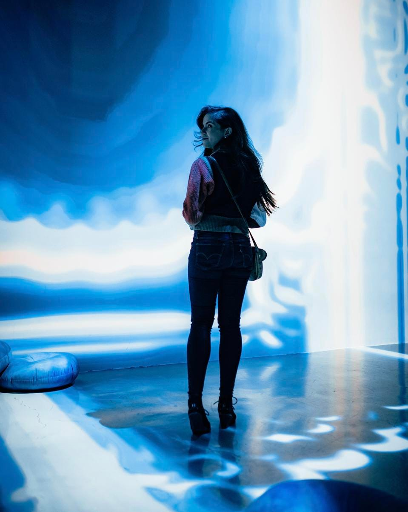

The renowned immersive arts institution will showcase its first 2020 installation during New York Fashion Week and on view from Feb. 5-23 at ARTECHOUSE NYC in Chelsea Market.

ARTECHOUSE NYC's 'Submerge' exhibition was inspired by and produced in collaboration with PantoneANDREW ALBIGESE/ARTECHOUSE

Our collaboration with Pantone offered us an opportunity to utilize our state-of-the-art technology and design tools to push the possibilities and truly submerge people into color, creating an unprecedented multisensory exploration where one would not only visually take in the color but feel it all around them.

It is this kind of constancy and confidence that is expressed by PANTONE 19-4052 Classic Blue, a solid and dependable blue hue we can always rely on.Imbued with a deep resonance, PANTONE 19-4052 Classic Blue provides an anchoring foundation.